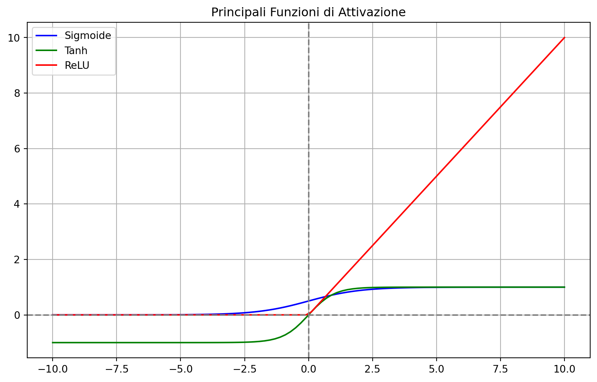

Il percettrone è un modello semplificato del funzionamento di una cellula nervosa, proposto da Frank Rosenblatt nel 1958 (Rosenblatt 1958). Rappresenta la base su cui si sono costruite le moderne reti neurali ed è in grado di risolvere problemi di classificazione linearmente separabili. La sua semplicità lo rende un ottimo punto di partenza per comprendere i principi fondamentali del machine learning.
13.2 Struttura e Funzionamento
Il percettrone prende in input un vettore di caratteristiche numeriche ( x = (x_1, x_2, , x_n) ) e calcola una somma pesata:
\[
z = \sum_{i=1}^n w_i x_i + b
\]
Dove: - \(w_i\) sono i pesi, - $b è il bias.
Il risultato \(z\) viene trasformato da una funzione di attivazione che produce l’output del modello:
\[
\hat{y} = f(z)
\]
Nel percettrone classico, la funzione \(f\) è la funzione a soglia:
Il modello viene addestrato con l’algoritmo di aggiornamento del percettrone. Per ogni errore di classificazione, i pesi vengono aggiornati come segue:
L’andamento delle funzioni di attivazioni viste è mostrato nel seguente grafico.
import numpy as npimport matplotlib.pyplot as pltz = np.linspace(-10, 10, 100)sigmoid =1/ (1+ np.exp(-z))tanh = np.tanh(z)relu = np.maximum(0, z)plt.figure(figsize=(10, 6))plt.plot(z, sigmoid, label='Sigmoide', color='blue')plt.plot(z, tanh, label='Tanh', color='green')plt.plot(z, relu, label='ReLU', color='red')plt.axhline(0, color='gray', linestyle='--')plt.axvline(0, color='gray', linestyle='--')plt.title("Principali Funzioni di Attivazione")plt.legend()plt.grid(True)plt.show()

13.5 Limitazioni
Il percettrone può risolvere solo problemi linearmente separabili, cioè in cui una retta (o un iperpiano) può separare le classi. Per problemi più complessi, si usano reti neurali multilivello (MLP), in grado di apprendere anche confini non lineari (Haykin 2009).
13.6 Laboratorio di Python
13.6.1 Esperimento 1: Implementazione di un perceptrone
In questo esperimento sviluppiamo una implementazione del perceptrone senza fare uso di librerie esterne e lo useremo in un problema di classificazione con classi linearmente separabili. Le sole librerie usata sono random per la generazione di numeri casuali per simulare i dati e matplotlib per graficare i risultati. I dati simulati sono costruti per essere linearmente separabili.
import randomimport matplotlib.pyplot as plt# -----------------------# 1. Generazione del dataset# -----------------------random.seed(42)n_samples =100X = []y = []for _ inrange(n_samples): x1 = random.uniform(0, 10) x2 = random.uniform(0, 10) label =1if x1 + x2 >10else0# Separazione lineare lungo la diagonale x1 + x2 = 10 X.append([x1, x2]) y.append(label)# Suddividiamo manualmente in training e test setsplit_index =int(0.8* n_samples)X_train = X[:split_index]y_train = y[:split_index]X_test = X[split_index:]y_test = y[split_index:]# -----------------------# 2. Funzioni del Percettrone# -----------------------def step_function(z):return1if z >=0else0def predict(x, weights, bias): z =sum(w * xi for w, xi inzip(weights, x)) + biasreturn step_function(z)def train_perceptrone(X_train, y_train, learning_rate=0.1, epochs=10): n_features =len(X_train[0]) weights = [0.0for _ inrange(n_features)] bias =0.0for epoch inrange(epochs):for x, label inzip(X_train, y_train): y_pred = predict(x, weights, bias) error = label - y_pred# Aggiornamento pesi e biasfor i inrange(n_features): weights[i] += learning_rate * error * x[i] bias += learning_rate * errorreturn weights, bias# -----------------------# 3. Addestramento del modello# -----------------------weights, bias = train_perceptrone(X_train, y_train, learning_rate=0.1, epochs=30)# -----------------------# 4. Valutazione e Matrice di Confusione# -----------------------TP = FP = TN = FN =0y_pred_test = []for x, label inzip(X_test, y_test): y_hat = predict(x, weights, bias) y_pred_test.append(y_hat)if y_hat ==1and label ==1: TP +=1elif y_hat ==1and label ==0: FP +=1elif y_hat ==0and label ==0: TN +=1elif y_hat ==0and label ==1: FN +=1print("Matrice di Confusione (senza librerie esterne):")print(f"TP: {TP}, FP: {FP}, TN: {TN}, FN: {FN}")accuracy = (TP + TN) /len(y_test)print(f"Accuratezza: {accuracy:.2f}")# -----------------------# 5. Visualizzazione# -----------------------x1_pos = [X_test[i][0] for i inrange(len(y_test)) if y_test[i] ==1]x2_pos = [X_test[i][1] for i inrange(len(y_test)) if y_test[i] ==1]x1_neg = [X_test[i][0] for i inrange(len(y_test)) if y_test[i] ==0]x2_neg = [X_test[i][1] for i inrange(len(y_test)) if y_test[i] ==0]plt.figure(figsize=(8, 6))plt.scatter(x1_pos, x2_pos, c='green', label='Classe 1 (Reale)', marker='x')plt.scatter(x1_neg, x2_neg, c='blue', label='Classe 0 (Reale)', marker='o')# Linea di decisione: w1*x1 + w2*x2 + b = 0 => x2 = -(w1*x1 + b)/w2x1_vals = [i for i inrange(0, 11)]if weights[1] !=0: x2_vals = [-(weights[0]*x + bias)/weights[1] for x in x1_vals] plt.plot(x1_vals, x2_vals, '--', color='black', label='Confine decisionale')plt.xlabel("x1")plt.ylabel("x2")plt.title("Percettrone - Separazione tra classi")plt.legend()plt.grid(True)plt.show()
Il codice Python usato per l’implementazione del perceptrone e per il grafico dei risultati segue la seguente logica:
Generazione dati Simuliamo 100 punti 2D. I punti per cui \(x_1 + x_2 > 10\) sono etichettati come classe 1, altrimenti classe 0.
Implementazione del percettrone
step_function(z): restituisce 1 se la somma è maggiore o uguale a zero, altrimenti 0.
predict(x, weights, bias): calcola il valore di \(z\) e applica la funzione di attivazione.
train_perceptrone(): implementa l’algoritmo di apprendimento con aggiornamento dei pesi.
Addestramento Il modello viene addestrato per 20 epoche (ripetizioni del dataset) su 80% dei dati.
Matrice di confusione Calcolo dei 4 elementi della matrice di confusione:
TP: (True Positive = Vero Positivo) predetto 1 e vero 1
TN: (True Negative = Vero Negativo) predetto 0 e vero 0
FP: (False Positive = Falso Positivo) predetto 1 e vero 0 (falso allarme)
FN: (False Negative = Falso Negativo) predetto 0 e vero 1 (falso negativo)
Visualizzazione Il grafico mostra:
I punti veri (blu per classe 0, verde per classe 1).
Il confine decisionale calcolato con la formula della retta.
Risultato atteso
Con dati così semplici e ben separabili, il percettrone dovrebbe ottenere una accuratezza alta (quasi 100%).
13.6.2 Esperimento 2: il perceptrone bel caso di classi concentriche
Il codice Python che segue implementa un semplice modello di classificatore a perceptrone usando la sola libreria random per la generazione di numeri casuali per simulare i dati e matplotlib per graficare i risultati. I dati simulati sono distribuiti su due corone circolari concentriche e quindi non linearmente separabili.
import mathimport randomimport matplotlib.pyplot as plt# -------------------------------# 1. Generazione del dataset circolare# -------------------------------def genera_cerchi(n_samples): X = [] y = []for _ inrange(n_samples): r = random.uniform(0, 1) angle = random.uniform(0, 2* math.pi)if r <0.5: radius = random.uniform(1, 2) label =0else: radius = random.uniform(3, 4) label =1 x1 = radius * math.cos(angle) x2 = radius * math.sin(angle) X.append([x1, x2]) y.append(label)return X, yrandom.seed(42)X, y = genera_cerchi(200)# Suddividiamo in training e test setsplit_index =int(0.8*len(X))X_train = X[:split_index]y_train = y[:split_index]X_test = X[split_index:]y_test = y[split_index:]# -------------------------------# 2. Percettrone da zero# -------------------------------def step_function(z):return1if z >=0else0def predict(x, weights, bias): z =sum(w * xi for w, xi inzip(weights, x)) + biasreturn step_function(z)def train_perceptrone(X, y, learning_rate=0.1, epochs=20): n_features =len(X[0]) weights = [0.0for _ inrange(n_features)] bias =0.0for epoch inrange(epochs):for xi, yi inzip(X, y): y_pred = predict(xi, weights, bias) error = yi - y_predfor i inrange(n_features): weights[i] += learning_rate * error * xi[i] bias += learning_rate * errorreturn weights, bias# Addestramentoweights, bias = train_perceptrone(X_train, y_train)# -------------------------------# 3. Valutazione# -------------------------------TP = FP = TN = FN =0y_pred_test = []for x, label inzip(X_test, y_test): y_hat = predict(x, weights, bias) y_pred_test.append(y_hat)if y_hat ==1and label ==1: TP +=1elif y_hat ==1and label ==0: FP +=1elif y_hat ==0and label ==0: TN +=1elif y_hat ==0and label ==1: FN +=1print("Matrice di confusione:")print(f"TP: {TP}, FP: {FP}, TN: {TN}, FN: {FN}")accuracy = (TP + TN) /len(y_test)print(f"Accuratezza: {accuracy:.2f}")# -------------------------------# 4. Visualizzazione# -------------------------------# Colori realix1_pos = [X_test[i][0] for i inrange(len(y_test)) if y_test[i] ==1]x2_pos = [X_test[i][1] for i inrange(len(y_test)) if y_test[i] ==1]x1_neg = [X_test[i][0] for i inrange(len(y_test)) if y_test[i] ==0]x2_neg = [X_test[i][1] for i inrange(len(y_test)) if y_test[i] ==0]plt.figure(figsize=(8, 6))plt.scatter(x1_pos, x2_pos, color='green', label='Classe 1 (Reale)', marker='x')plt.scatter(x1_neg, x2_neg, color='blue', label='Classe 0 (Reale)', marker='o')# Linea di decisione (valida solo per separazione lineare)x_vals = [i /10.0for i inrange(-40, 41)]if weights[1] !=0: y_vals = [-(weights[0]*x + bias)/weights[1] for x in x_vals] plt.plot(x_vals, y_vals, '--', color='black', label='Confine decisionale')plt.title("Percettrone su dati non linearmente separabili")plt.xlabel("x1")plt.ylabel("x2")plt.legend()plt.grid(True)plt.show()
L’esito dell’esperimento mostra chiaramente ciò che già sapevamo bene: Il percettrone può apprendere solo confini lineari. In questo caso:
I dati sono disposti in cerchi concentrici, cioè non possono essere separati con una retta.
Il percettrone cerca una retta per dividere i dati… ma non riesce e commette molti errori.
L’accuratezza è bassa (minore del 50%).
Il grafico mostra che la linea di decisione non riesce a separare correttamente le due classi.
In casi come questo servono modelli di reti neurali più avanzati come le reti neurali multistrato (MLP) .
13.7 Esercizi
13.7.1 Esercizio 1: Comprendere la classificazione lineare
Spiega con parole tue cosa significa che un problema è linearmente separabile. Fai un esempio nel contesto giuridico in cui questo tipo di separazione potrebbe essere realistico.
13.7.2 Esercizio 2: Aggiornamento dei pesi
Dati i seguenti valori:
input \(x = [2, -1]\)
pesi iniziali \(w = [0.5, 0.5]\)
bias \(b = 0.2\)
apprendimento \(\eta = 0.1\)
output vero \(y = 1\)
output predetto \(\hat{y} = 0\)
Calcola i nuovi valori di \(w\) e \(b\) dopo un singolo aggiornamento.
13.7.3 Esercizio 3: Vantaggi e limiti del modello
Quali sono i principali vantaggi e limiti dell’utilizzo del percettrone in ambito giuridico? Riporta almeno un esempio per ciascun caso.
Rosenblatt, Frank. 1958. The Perceptron: A Probabilistic Model for Information Storage and Organization in the Brain. Psychological Review. Vol. 65. 6. American Psychological Association.